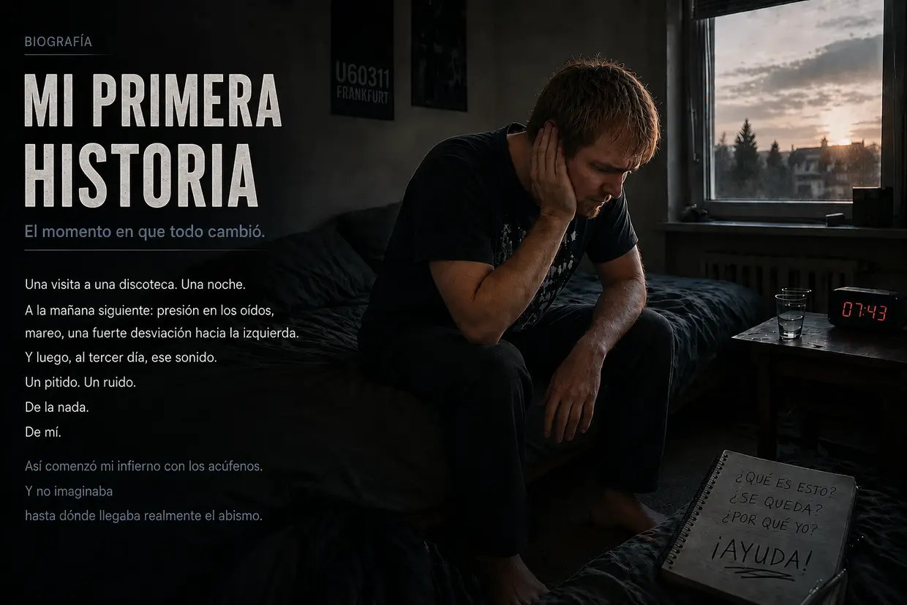
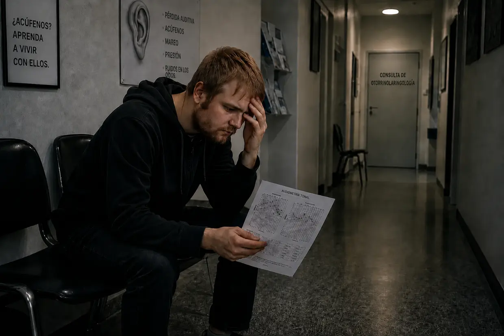
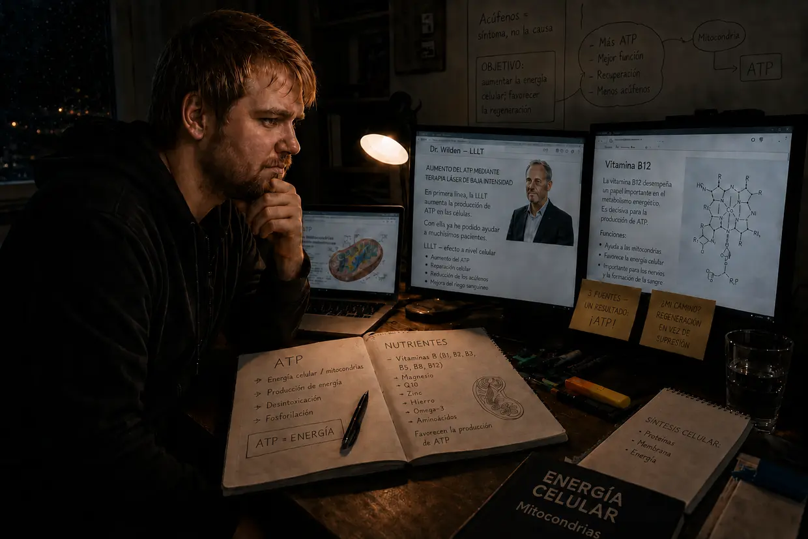
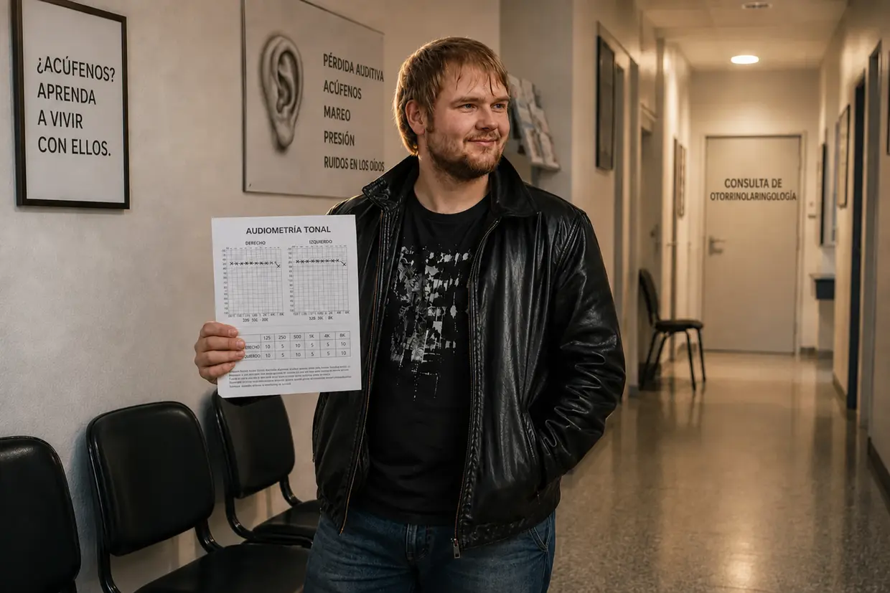

Mi camino al infierno de los acúfenos — Parte 1: el viaje infernal
Hola, me llamo Dustin Müller. Como alguien que padeció acúfenos en más de una ocasión y ya no los padece, sentí una necesidad extrema de crear esta página. Con mis años de investigación, protocolos reales de biohacking y experiencias propias, quiero mostrar a otras personas afectadas cómo encontré personalmente el camino hacia la curación completa. Pero, antes de adentrarnos en los mecanismos, tengo que contar cómo empezó todo en mi caso. Y no fue una casualidad médica, sino un choque frontal.
¿Buscas la versión breve? Esta versión extensa entra en todos los detalles: los audiogramas, las consultas con otorrinolaringólogos y cada uno de los avances. Si prefieres algo más compacto, ve a la historia breve.
Otoño de 2011: el cuerpo invencible y la carga previa
A los 23 años, uno tiene energía de sobra y cree que el cuerpo puede con todo; yo también trataba así a mis oídos. A mí me encantaba la música. Durante años la escuché con auriculares a tal volumen que mis padres podían oírla a través de la puerta cerrada de mi habitación. Sin que yo lo supiera, el sistema ya llevaba mucho tiempo «cociéndose a fuego lento».
Todo empezó por mi primo. Como nunca había estado de verdad en una discoteca, me propuso acompañarlo a la U60311 de Fráncfort. Tenía un mal presentimiento, pero acepté. Ya al bajar las escaleras sentí hasta qué punto el bajo era físicamente brutal. Una vez dentro, busqué con ingenuidad el que creía que era el mejor sitio: a unos 10 metros, justo delante de los enormes altavoces, con el oído izquierdo orientado directamente hacia la fuente de sonido. Ese fue el error que derribó la primera ficha de dominó.
La mañana siguiente: la calma engañosa
En cuanto la puerta se cerró detrás de nosotros, sentí una presión demencial en los oídos, mucho más intensa en el izquierdo. Todo sonaba amortiguado, como bajo el agua. Mi primo dijo que era normal y que desaparecería. Como estaba borracho, me dejé caer en la cama. A la mañana siguiente, al intentar levantarme, caí de golpe otra vez sobre la almohada: mi sistema del equilibrio estaba destrozado y una fuerza mecánica brutal me arrastraba hacia la izquierda.
Confiaba de forma extrema y casi instintiva en la capacidad regenerativa de mi cuerpo, así que me lo tomé casi con humor: el tiempo se encargará. Y eso parecía. El segundo día mejoró la desviación hacia la izquierda y la sensación de presión casi desapareció. Respiré aliviado: creí que me había librado.
Día 3: el monstruo despierta
Tercer día después de la discoteca. Me desperté y, de repente, oí un sonido parecido al pitido de un refrigerador. ¿Qué demonios? Acerqué la cabeza a la pared. Escuché junto al enchufe. Revisé la computadora y el despertador. Nada. Entonces me tapé los oídos con las manos.
¡Mierda! Sale de mí. Está dentro de mi cabeza.
Permanecí varios minutos en estado de conmoción. ¿Qué es esto? ¿Se va a quedar? En el oído izquierdo oía un zumbido, ruido, sirenas y un pitido fuerte. En ese momento ya percibía también un pitido débil en el derecho. A pesar de la conmoción, pensé: ya desaparecerá.
El envenenamiento del software (el plazo de 14 días)
En cuestión de minutos encontré respuestas en internet: sordera súbita y daño en el oído interno. Pérdida auditiva permanente, a menudo acompañada de ruidos en los oídos. Y entonces apareció la frase que me heló la sangre: «Hay que tratarlo en un plazo de 14 días; de lo contrario, se vuelve crónico y uno lo conserva durante toda la vida». En el foro tinnitus.de leí hilos de personas que llevaban cinco años viviendo con aquello. ¿Cinco años? ¡Mierda! Un defecto físico se convirtió en una amenaza psicológica masiva.
La traición de la bata blanca (mi primera consulta con un otorrinolaringólogo)

Fui al otorrinolaringólogo que me atendía desde niño. Esperanza. Ahora llegará la salvación. Le conté lo de la discoteca y los síntomas. Él, ya un poco molesto: «Bueno, no le preste atención. Escuche un poco de música para enmascarar los sonidos». Insistí: «¿Pero no hay que tratarlo en un plazo de 14 días? ¿Y de verdad tiene sentido seguir exponiéndome a sonidos?». Él respondió: «Primero haremos una audiometría». Dicho esto, salió de la habitación. Mi fe empezaba a desmoronarse.
El horror del silencio (la audiometría)
Solo al entrar en la cabina insonorizada comprendí lo grave que era realmente mi daño auditivo. En aquel silencio absoluto desapareció todo enmascaramiento natural: los sonidos de mi oído izquierdo eran increíblemente fuertes. La prueba constaba de tres partes: determinar la frecuencia y la intensidad de los acúfenos, medir la capacidad auditiva general y evaluar la conducción ósea en el cráneo.
La sentencia
Con el informe en la mano, el médico me explicó que mi audición estaba dañada de forma permanente y que no se podía hacer nada. Conmocionado, pregunté qué posibilidades tenía. Otra vez un poco exasperado: «Tiene que aprender a vivir con ello. No le preste atención, distráigase, póngase los auriculares». Ante mi absurda pregunta de si podía seguir yendo a discotecas, contestó: «Sí, eso no causa ningún problema». Y con eso dio por terminada la consulta.
El juramento y el camino de regreso
El camino de vuelta a casa fue un auténtico infierno. Un peso aplastante. En mi desesperación pensé por un momento: o consigo que esto desaparezca o ya no quiero vivir. Pero, al llegar a casa, aquella tristeza sin fondo se transformó de repente en rebeldía. No puedo creer que ningún médico de Alemania sepa qué son los acúfenos. Cerré los puños:
«O se van los acúfenos o me voy yo. No voy a permitir que esta cosa domine mi vida. Tengo que averiguar por mí mismo qué se puede hacer».
El salvaje oeste de los enfoques para encontrar una solución

Empecé a informarme por mi cuenta y me encontré con una cantidad abrumadora de «terapias»:
- Cortisona y ginkgo: sustancias que favorecían el riego sanguíneo y reducían la inflamación; parecía lógico para recuperar la audición.
- Mandíbula y cuello (CMD/columna cervical): teorías según las cuales las tensiones musculares provocaban los sonidos. Pero, como yo me había causado los acúfenos sin ninguna duda por el bajo de la discoteca, se activó mi detector de estupideces.
- TRT y enmascaramiento: taparlos con otros sonidos. De hecho, así podía reducir los acúfenos a corto plazo, pero, cuando apagaba el sonido de fondo, regresaban más agresivos y fuertes. (Hoy sé que cada nuevo sonido obliga a trabajar a unas células ciliadas que ya están sin energía: consumen el último ATP que en realidad necesitarían para curarse).
- Suplementos nutricionales: por aquel entonces me reía de esas personas. Qué idiotas, pensaba; encima gastaban dinero en algo que yo consideraba un disparate absoluto. Jamás habría imaginado que más adelante conseguiría doblegar mis acúfenos precisamente por ese camino: verdadera energía celular, producción de ATP y los nutrientes adecuados.
La segunda consulta con un otorrinolaringólogo: el consejo fatal
La mañana de mi segunda consulta, los acúfenos se habían intensificado de repente de forma masiva; también el débil pitido que ya existía en el oído derecho era ahora claramente más fuerte. (Hoy sé que la exposición adicional a sonidos por consejo médico —con música y, por la noche, con ruido blanco— había vuelto a poner de rodillas a mis células y había intensificado el sonido ya presente en el oído derecho). El segundo otorrinolaringólogo fue amable y alentador. Me recetó ginkgo y recomendó dormir lo suficiente y hacer ejercicio. Cuando pregunté por los auriculares, respondió: «Incluso son beneficiosos para distraerse». (Desde la perspectiva actual de la biología celular, un consejo absolutamente fatal). Cuando le pregunté por la cronificación a los tres meses, se limitó a decir: «Ya veremos… también se puede aprender a compensarlo, es decir, a dejar de percibirlo por completo». Ahí estaba otra vez aquella media frase que descartaba cualquier curación real.
La engañosa rueda de hámster
Así pasaron días y semanas. Durante el día, la escuela me distraía. Por la noche me refugiaba en el engañoso ciclo del enmascaramiento: música con auriculares y el sonido constante de una cascada. Con eso conseguía que la situación fuera soportable a corto plazo. Pero, desde el punto de vista biológico, daba vueltas en círculo: mantenía mis oídos agotados bajo un estrés continuo debido a aquella cortina sonora. Mis células quemaban su último ATP para procesar ese ruido artificial en vez de utilizarlo para la reparación física. Puro modo de supervivencia.
El segundo colapso: hiperacusia y el salto mortal del vértigo
Una mañana reapareció de repente una enorme presión en el oído izquierdo. Intenté ignorarla y fui a la escuela. Como todavía confiaba en el consejo médico, cometí un error fatal durante el trayecto: puse mi canción favorita a todo volumen en la radio del automóvil. Si hubiera imaginado lo que aún me esperaba aquel día de escuela, habría dado media vuelta en el acto. Las señales de advertencia ya estaban ahí. Pero no lo hice: las clases costaban dinero, así que seguí adelante. (Aquella música a todo volumen fue la gota que colmó el vaso para mis células, ya completamente agotadas).
Durante la primera clase aparecieron de repente una fuerte distorsión auditiva y una hipersensibilidad dolorosa a los sonidos normales: hiperacusia. (Hoy sé que los «amortiguadores» de mi oído, las células ciliadas externas, habían consumido su último ATP). A lo largo de las horas siguientes, la presión del oído izquierdo se volvió cada vez más brutal. Entonces ocurrió: todo mi campo visual empezó a girar en vertical, como medio salto mortal dentro de la cabeza. El mundo estaba al revés. Al cabo de unos segundos, la visión se normalizó. Lo que quedó fue un fuerte vértigo oscilante, una desviación masiva hacia la izquierda y una audición amortiguada en ese lado. (La retención de iones en mi oído interno se había vuelto tan enorme que había inundado el órgano del equilibrio adyacente).
Presa del pánico, intenté aguantar. En cuanto empezó el descanso, me fui de allí. El trayecto de vuelta fue una imprudencia: debido al vértigo extremo, tenía que corregir la dirección cada pocos segundos. Pero solo quería estar a salvo. Este segundo colapso fue el punto de inflexión definitivo: No puedo seguir esperando a que esto pase por sí solo.
Otorrinolaringólogos 3 y 4: pastillas en vez de respuestas, la mentira del ruido fantasma y la etiqueta psicológica
Aquel mismo día conseguí una cita de urgencia con el tercer otorrinolaringólogo. Audiometría, prueba del olfato y una prueba de «vértigo posicional» que no cambió nada. (Hoy lo tengo claro: no eran cristales sueltos, sino una hidropesía endolinfática; mover la cabeza no sirve de nada en ese caso). Una colega añadió otro diagnóstico: «otra sordera súbita; desaparecerá en 14 días»; o quizá se debía a unos senos paranasales obstruidos. Puras conjeturas sobre los síntomas. Entonces llegó el golpe: «Como sabe, muchas personas caen en una depresión. Si las molestias persisten, estaré encantada de recetarle antidepresivos». Me quedé sentado pensando que no podía estar oyendo aquello. Mi sistema del equilibrio se había desplomado y su solución era… ¿psicofármacos? Me lo juré: jamás.
Al cuarto otorrinolaringólogo —el «especialista»— le conté mi historia completa. En vez de entrar en el plano celular, respondió con frialdad: «¿Ha oído hablar alguna vez de la terapia cognitivo-conductual? Su problema es que se concentra demasiado en sus problemas auditivos y así mantiene los acúfenos». Repliqué: «¡Pero el sonido apareció físicamente después de ir a la discoteca!». No reaccionó en absoluto. Cuando pregunté por la cortisona, dijo: «Solo tendría sentido durante los primeros 14 días. En su caso, hay que partir de que se trata de un ruido fantasma». Para terminar, volvió a recomendarme TRT con sonidos de fondo y me cortó cuando expliqué que el enmascaramiento solo volvía más agresivos mis acúfenos. El sistema había capitulado y me había echado la culpa.
El punto más bajo: aislamiento y fallo del sistema
La pesadilla alcanzó su punto culminante en mi propia fiesta de cumpleaños (un mes y medio después de la sordera súbita). La hiperacusia y las distorsiones auditivas me estaban volviendo loco. Mis propios acúfenos eran tan fuertes que tapaban por completo lo que decían los demás. A eso se añadió un fenómeno extraño: las letras sonaban de forma totalmente distinta; una «S» sonaba como una «F» y una «T», como una «D». Ya no soportaba aquella sobrecarga de estímulos, interrumpí mi propio cumpleaños y huí a casa. En los días siguientes, el vértigo se volvió tan extremo que por momentos estuve a punto de caerme, un cuadro de síntomas compatible con la enfermedad de Ménière. Estaba completamente aislado y apartado. Abandonado por la vida y por los médicos, que no habían hecho más que inculcarme que estaba perdiendo la cabeza y que necesitaba antidepresivos.
La primera experiencia clave: la prueba contra la mentira del ruido fantasma
Precisamente a última hora de un fin de semana sufrí una otitis externa causada por una infección, así que no me quedó más remedio que arrastrarme hasta el servicio de urgencias del Hospital Universitario de Fráncfort. El otorrinolaringólogo tomó un aspirador minúsculo para aspirar uno tras otro los conductos auditivos. Y justo en ese momento se produjo la experiencia clave absoluta: cuando el ruido estridente bramó en el oído izquierdo, sentí al mismo tiempo cómo los acúfenos de ese lado reaccionaban al estruendo de forma agresiva y explosiva. Después, en el oído derecho, ocurrió exactamente lo mismo.
Fue una prueba A/B perfecta en mi propio cuerpo. Mi razonamiento hizo saltar por los aires las afirmaciones del «especialista»: ¡un ruido fantasma psicológico no reacciona al mismo tiempo a un estímulo sonoro puramente mecánico en el conducto auditivo correspondiente! Para mí, aquella reacción fue la prueba absoluta: la fuente defectuosa seguía allí abajo, en mi oído. Ante aquel estruendo, las células gritaban de inmediato pidiendo ayuda.
La infusión de cortisona y el milagro de las vendas de gasa
El otorrinolaringólogo preguntó de pasada cuánto tiempo había transcurrido desde la sordera súbita. Dos meses. Como todavía estaba dentro del plazo mágico de tres meses, dijo que valía la pena probar la cortisona. Acepté de inmediato y pasé la noche ingresado. Seguí investigando desde la cama del hospital y acabé en la página web de un paciente con acúfenos. Lo que leí allí tenía lógica desde el punto de vista de la biología celular: más ruido empeora drásticamente los acúfenos. Además, incluía un enlace a la página del doctor Wilden sobre su terapia con láser de baja intensidad (fotobiomodulación), que estimula de forma específica la producción de ATP en las células. Encajaba al 100 % con la experiencia del aspirador.
Me dieron el alta al cabo de tres días, con gruesas vendas de gasa en ambos oídos debido a la otitis externa. Ya durante aquellos días lo noté: ¡los acúfenos se habían vuelto perceptiblemente más débiles! Al principio pensé que se debía a la cortisona. Pero, cuando leí en la página del doctor Wilden lo fundamental que era buscar activamente el silencio, de pronto lo vi claro: ¡las vendas de gasa habían mantenido mis oídos fuertemente aislados durante días! Un otorrinolaringólogo normal jamás me habría vendado los oídos de una forma tan extrema. Sin pretenderlo, había obtenido la prueba de que el silencio absoluto producía un efecto.
El estallido, la dinámica y el protocolo del silencio absoluto
Pocos días después llegó otro descubrimiento importante. Durante el uso de un pequeño frasco de crema justo al lado del oído, se produjo de repente un fuerte estallido. En una fracción de segundo, mis acúfenos se dispararon, PERO regresaron en muy poco tiempo a su nivel «normal». Lo vi con absoluta claridad: mis acúfenos no eran algo «fijo», sino extremadamente dinámico. Empeoraban en tiempo real con el ruido y se reducían cuando buscaba el silencio de forma consecuente.
Saqué consecuencias tajantes. A partir de entonces pasaba activamente todo el tiempo posible en completo silencio. La música, las películas y las reuniones con amigos dejaron de ser parte de la vida cotidiana para convertirse en «recompensas» poco frecuentes; y, cuando me las permitía, siempre sin auriculares, a un volumen muy bajo y durante muy poco tiempo.
Seis meses de silencio: tras unos ocho meses en total, la curación se detuvo en el 25 %
REALMENTE, los acúfenos se reducían mes a mes. Unos seis meses después de comenzar mi protocolo de silencio —es decir, aproximadamente ocho meses después de la sordera súbita—, la intensidad había disminuido, visto en retrospectiva, alrededor de una cuarta parte. Por supuesto, no podía mantener aquel silencio total de forma perfecta al 100 %: incluso los desplazamientos imprescindibles en automóvil (200 kilómetros entre ida y vuelta) hacían que los acúfenos recuperaran el nivel elevado. Era como si hubiera guardado reposo durante una semana entera «para nada».
Entonces ocurrió algo frustrante: al alcanzar una mejoría de aproximadamente el 20–25 %, la curación se detuvo de repente. Llevé mi aislamiento al extremo: evitaba conversaciones, usaba tapones para los oídos constantemente e incluso había desterrado de mi habitación el reloj de pared que hacía tictac. Pero ya no pasaba nada. Cero.
Corrección del atlas, CMD y columna cervical: el callejón sin salida
Entonces se me ocurrió volver a profundizar en la relación entre la mandíbula, la columna cervical y los acúfenos. Descubrí la CMD (disfunción craneomandibular) y el dentista me hizo una férula de descarga. En un centro ortopédico me diagnosticaron un síndrome de la columna cervical y me prescribieron entrenamiento de fuerza (Med X). Cumplí ambos tratamientos con disciplina férrea y, al mismo tiempo, seguí manteniendo el silencio. Al cabo de dos meses llegó la desilusión: la CMD y las molestias cervicales mejoraron, pero los acúfenos NO CAMBIARON EN ABSOLUTO.
Último recurso: corregir el atlas. Recorrí 200 kilómetros para acudir a un Heilpraktiker que volvió a colocar mi atlas desalineado mediante un aparato especial y maniobras manuales. Tampoco eso produjo nada al cabo de varias semanas. Lo único que salió de aquello fue que el Heilpraktiker me recomendó cáscaras de psyllium, una mezcla de arcillas minerales y probióticos para mi gastritis crónica. Y, de hecho, la inflamación de la mucosa gástrica que se había resistido durante casi un año desapareció. Aquello me impresionó: la medicina convencional había fracasado; el Heilpraktiker había dado resultado.
Vitamina B12: la experiencia clave (fortuita) más importante
Por entonces, mi padre sufría polineuropatía. Su médico de cabecera le diagnosticó una carencia pronunciada de vitamina B12 y le prescribió inyecciones. Una noche, cuando se inyectó una ampolla delante de mí, dijo poco después que el dolor había disminuido y que volvía a sentir más calor. ¿Una ampolla roja tan pequeña producía un efecto físico tan intenso?
Investigué y leí que la B12 es LA vitamina de los nervios. Los vegetarianos (¡yo lo era desde los 15 años!) y los pacientes con gastritis crónica (la mía apenas había remitido hacía poco) corrían un riesgo especialmente elevado. Mi médico de cabecera me hizo un análisis de sangre: el valor era 279, con un intervalo de referencia de 211–911; en la parte más baja del intervalo normal, justo antes del umbral de una carencia real. Por tanto, no se había confirmado una carencia verdadera. Aun así, en aquel momento interpreté aquel valor normal bajo como una carencia funcional. El médico se negó a administrarme inyecciones: «Todavía está dentro de la normalidad». Salí de la consulta abatido.
Cuando mi padre necesitó la siguiente inyección de B12 aquella noche, reuní valor y dejé que me pusiera una a mí también. Importante: desaconsejo expresamente imitarlo sin supervisión médica. ¡Vaya! Al cabo de unos minutos noté una mejor circulación, un calor agradable y la mente más despejada. Me acosté relajado.
A LA MAÑANA SIGUIENTE: el milagro absoluto. Apenas unos segundos después de despertar, lo noté de inmediato: ¡los acúfenos se habían reducido de forma masiva! De una mejoría del 25 % pasé de repente a algo más del 40 %. Me quedé tumbado, atónito y al borde de las lágrimas. A lo largo del día volvieron a empeorar, pero no hasta el nivel anterior. Y a la mañana siguiente, otra vez: 40 %.
En la página del doctor Wilden leí que su láser estimulaba de forma específica la producción de ATP en las células. Y la B12 es esencial precisamente para esa producción de ATP. ¡CLIC! Quizá ni siquiera necesite el costoso láser: puedo elevar el ATP mediante nutrientes específicos.
Cólico biliar y el milagro de la lecitina (mi modelo de la mielina de entonces)
Mientras esperaba unos preparados multivitamínicos en dosis altas procedentes de Estados Unidos, me golpeó la siguiente catástrofe: un cólico biliar causado por cálculos biliares. En el servicio de urgencias nocturno, la médica solo quiso ofrecerme una operación: extirpar la vesícula. Me negué y volví a casa bajo mi propia responsabilidad.
De nuevo, investigación en internet. Una persona afectada contó que tomar lecitina granulada durante meses había disuelto por completo sus cálculos biliares. La conseguí al día siguiente, tomé 30 g y realmente sentí cómo disminuía la presión en la parte superior derecha del abdomen. Importante: ante cálculos biliares, busca siempre supervisión médica; esto es únicamente mi experiencia personal en una situación aguda, no un consejo de tratamiento para otras personas.
Pero el verdadero punto culminante llegó tres días después: tras una inyección de B12 más lecitina granulada, volvió a ocurrir un milagro. Al día siguiente: ¡una mejoría del 60–65 % respecto al estado inicial! Después de meses de estancamiento. Investigué y, por entonces, elaboré el siguiente modelo: la lecitina es un componente estructural fundamental de la vaina de mielina (el aislamiento de los nervios). Según la investigación que leí entonces, precisamente ese aislamiento se dañaba en los acúfenos por ruido: «Como cuando se destruye la cubierta de plástico de un cable eléctrico fino». Y, según aquello, la B12 era LA vitamina más importante para regenerar la vaina de mielina. ¡Dios mío! ¡Entonces no solo necesito ATP, sino también MATERIALES DE CONSTRUCCIÓN! Hoy veo este mecanismo de una forma más abierta: sigo considerando posible una participación del nervio auditivo o de la mielina, pero no puedo demostrarla con certeza en mi caso. También es posible una vía indirecta: la colina de la lecitina podría servir como componente de la acetilcolina y, a través de ella, favorecer el sistema parasimpático, el sueño profundo y la regeneración; o quizá la lecitina aceleró la reparación celular por varias vías a la vez. Tal vez se combinaron ambas cosas.
El avance hasta el 80 % (el baipás del complejo B)
Con la lecitina, el preparado multivitamínico y las inyecciones de B12, la curación avanzó, pero la mejoría de los acúfenos se estancó en torno al 70 %. Mi sospecha era que las demás vitaminas del grupo B no se absorbían lo suficiente. Conseguí B1 y B2 en ampollas y B3, B5 y B8 en comprimidos de dosis altas. Y ¡SÍ, SÍ, SÍ!: ¡cada semana se reducían un poco más! Entre los meses 16 y 17 después de la discoteca, los acúfenos se habían reducido realmente al 20 % de su nivel inicial (es decir, una mejoría del 80 %). Pero después, otra vez: estancamiento.
La curación definitiva: el «bombardeo de saturación» sobre las células
Investigué como un poseso y, en aquel momento, llegué a la siguiente conclusión: pensar solo en la B12 y la lecitina se quedaba muy corto. Para la reparación de la mielina que yo suponía y para otros procesos de construcción celular, el cuerpo necesitaba toda una abundancia de nutrientes adicionales: omega-3 (DHA/EPA), aminoácidos, vitamina C, vitaminas liposolubles A/D/E/K y minerales. Me atiborré literalmente: inyecciones de vitaminas del grupo B dos veces por semana, 30 g de lecitina entre tres y cuatro veces por semana, aminoácidos en polvo a diario, 3 g de omega-3, vitamina C en dosis altas, la mezcla de minerales de Life Extension, magnesio y zinc de NOW Foods, un vaso de LaVita al día y, además, comprimidos multivitamínicos del doctor Rath. Un «bombardeo de saturación» ortomolecular.
La desaparición gradual y el final de la pesadilla (curación al 100 %)
Con el conjunto completo de nutrientes, la dinámica cambió de forma definitiva. Según mi modelo de entonces, mi cuerpo disponía ahora de energía en forma de ATP Y de toda la gama de materiales de construcción. En combinación con el modo monje, por fin podía trabajar de verdad. Hoy veo la mejora del aporte energético como la palanca principal; al mismo tiempo, los nutrientes proporcionaban cofactores y materiales de construcción importantes y podrían haber acelerado aún más el proceso. Igual que al principio: por la mañana, el sueño había recargado por completo la batería celular; era el mejor momento del día. Por la noche, debido al cansancio acumulado, los acúfenos volvían a ser más fuertes. Pero el silencio fue ganando terreno y duraba cada vez más horas del día. Al principio, el sonido desaparecía hasta el mediodía. Después, hasta la tarde. Los empeoramientos al final del día se volvieron cada vez más débiles y breves.
Y entonces llegó aquella mañana definitiva; jamás la olvidaré. En una fracción de segundo, nada más despertar, lo sentí: algo se notaba distinto dentro de mi cabeza. Con el corazón desbocado —emocionado como un niño en Navidad—, me introduje los tapones profundamente en los oídos. Escuché… y no había absolutamente NADA.
El regulador de intensidad había quedado definitivamente en cero. Por la mañana, al mediodía, por la noche: ya no había nada. Solo el silencio natural y apacible que no había conocido durante casi dos años. Los acúfenos habían desaparecido. Por completo.
Aquella sensación era indescriptible. Una sensación profunda y cálida de alivio definitivo y satisfacción absoluta. Había ganado: no me había rendido, había triunfado frente a los médicos del «aprenda a vivir con ello» y, al final, ni siquiera había necesitado el costoso láser. Mi cuerpo lo había reparado por sí solo; el resultado era real: los acúfenos habían desaparecido por completo. Por entonces me explicaba el mecanismo así: se había restaurado la vaina de mielina, el armazón de actina de las células ciliadas volvía a estar en su sitio, se había resuelto el falso contacto y el cerebro había desconectado el amplificador de emergencia (ganancia central). Hoy veo el aporte energético como la palanca principal de la regeneración celular y me fijo sobre todo en las células ciliadas, sus estereocilios y las membranas celulares. Sigo considerando posible una participación de la mielina o del nervio auditivo, pero no puedo demostrarla con certeza en mi caso. La biología había vencido.
Lo que aún no imaginaba aquella mañana era que, muchos meses después, otra reacción en cadena fatal hundiría mi cuerpo en el síndrome de fatiga crónica (SFC) más grave. Pero llevé conmigo a ese siguiente infierno el conocimiento de que uno mismo puede curar incluso lo «incurable».
La historia todavía no termina aquí. Lo que llegó después del primer triunfo fue la verdadera prueba más dura y la demostración consciente —y demencial— de que mi modelo biológico realmente funciona.
